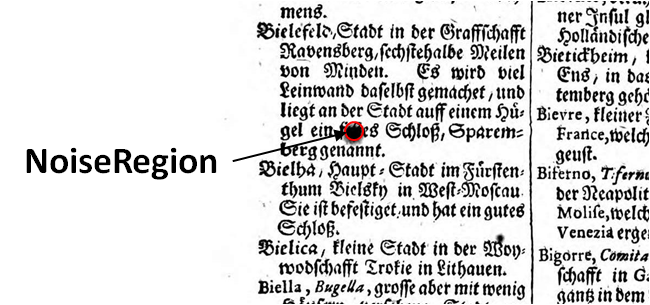

Damage, Dirt, Stains, Noise (NoiseRegion)
Damage, dirt, stains and other artefacts caused by various factors (e.g. lighting, reflections, scanning) must be marked with the NoiseRegion. Being marked this way, they are not used for text recognition during the training process.
